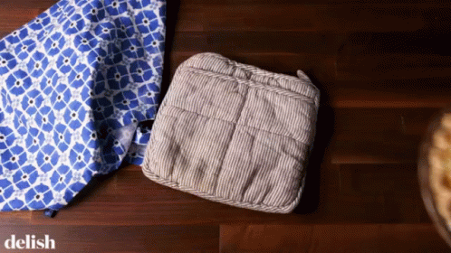

Le Moule à Quiche

100000069¥
Cet article est l'objet idéal pour vos meilleurs soirées quiches. Vous serez nommé inconstestablement le maitre de la kouizine grâce à la recette de quiche lorraine ci-dessous. De plus vos mouvements seront guidés par les lignes poétiques du fameux Amedemai. Croyez nous, c'est l'artéfacte qu'il vous faut !

Comme il me faut 50 ligne de texte, voici un poème sur ce plat :
Quiche Lorraine
Que nous préparez-vous ce soir cuisinier ?
Une folie répondit, c'est une surprise
Imaginez les saveurs de nos montagnes
comblez-nous céans de vos mets raffinés
Hâtez vous de nous surprendre par les saveurs
Enduisez chapons et volailles de sauces épaisses
Lisez moult recettes de maître Apicius
Oubliez qui nous sommes donnez nous toujours plus
Rôtissez volailles et cochonnailles au bon vin
Râpez nous les légumes de la saison d'automne
Arrosez de vin et de chapelure vos oies
Initiez vos commis au plaisir de ripaille
N'oubliez point de nous apporter les sauces
Et servez-nous, maintenant faisons bombance
Amedemai, 2009
Tant qu'on y est voici une recette de Quiche Lorraine :
- Ingrédients (pour 4 personnes) :
Etape 1
Préchauffer le four à 180°C (thermostat 6). Etaler la pâte dans un moule,
Etape 2
la piquer à la fourchette (attention à ne pas vous piquer). Parsemer de copeaux de beurre.
Etape 3
Faire rissoler les lardons à la poêle puis les éponger avec une feuille d'essuie-tout (sauf si vous aimez bien le gras).
Etape 4
Battre les oeufs, votre femme, la crème fraîche et le lait.
Etape 5
Ajouter les lardons.
Etape 6
Assaisonner de sel, de poivre et de muscade.
Etape 7
Verser sur la pâte.
Etape 8
Cuire 45 à 50 min.
Etape 9
Déguster (attention à ne pas manger le moule)

D'après Marmiton